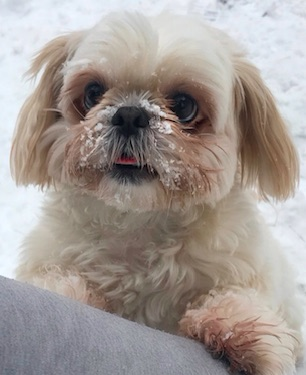

Going outside on a walk or to play fetch is one of my main hobbies.I'm six years old, but I still act as if I am a puppy. I have so much energy so sometimes when I am couped up inside the house I just begin to run circles around the kitchen table. Going outside is a good way for me to get my energy out whether it is a long walk or playing fetch in the backyard. Sometimes I like to chase chipmunks or squirrels and sometimes other dogs that are passing by, but that usually ends up with me being introuble with my parents because they have to chase me around and I run pretty fast.
When it comes to the colder seasons like Winter you would think that since I am a very small dog I would hate to go out in the cold, but I love snow! My sister does make me wear a jacket even though I feel like I could go without it. Since I was a baby my dad or my brother would always take me outside as they were shoveling the front stairs. Instead of bringing my ball outside with us, they make me giant snowballs and throw them really far so I run after them. When I get a hold of it I break them up with my little paws and dig through them until they are no longer a snowball. I don't know why I think it's so much fun, but it makes me so happy!